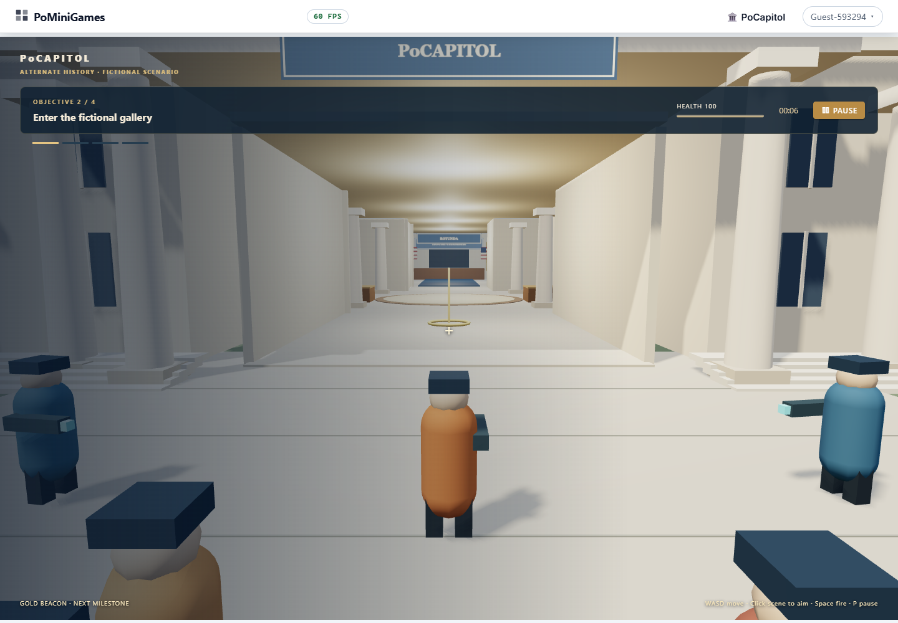
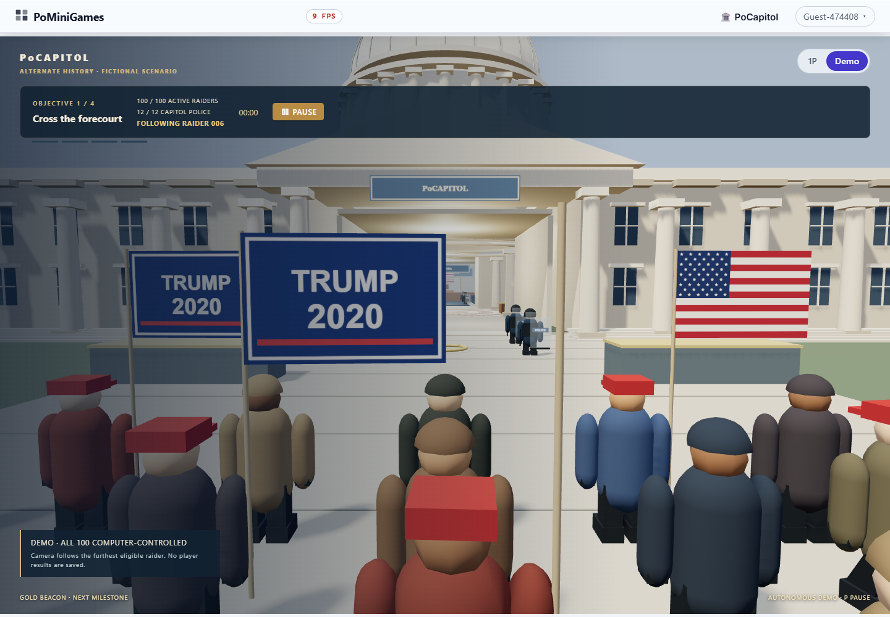

PoCapitol: a full crowd, and a camera that follows progress
Actual browser captures, annotated comparison. Solo remains playable; demo is an autonomous spectator mode.
BEFORE - small companion group

- One human and four following companions.
- Solo-only controls and results.
- Basic facade, dome, plain clothing and fictional defenders.
AFTER - 100 raiders in either mode

- Solo: one human + 99 autonomous NPCs; demo: 100 CPU raiders.
- Leader-following camera, live counts, automatic replay; no demo stats.
- Winter clothes, U.S./campaign flags, police helmets and shields.
- Referenced dome, Rotunda and House motifs; instanced crowd/scenery.
100 raiders → ordered progress → closest eligible leader → follow camera → replay
Historical boundary: Public references inform visible motifs, not a measured reconstruction.
Characters, crowd/equipment counts, police positions, combat and room connections are fictional.
The game does not claim that its outcome represents a historical victory.